헤드리스 Chrome(맥 M5) 같은 시점 캡처. 숫자는 화면 전체 기준(0～255). 눈으로 본 판단은 계획 문서 docs/goal-gap-plan.md 7장에 [관찰]로 적었다.
왼쪽 배치 C(79b3eab), 오른쪽 배치 D
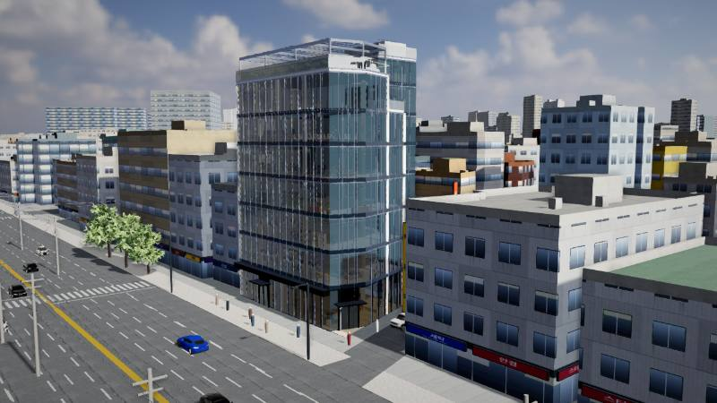
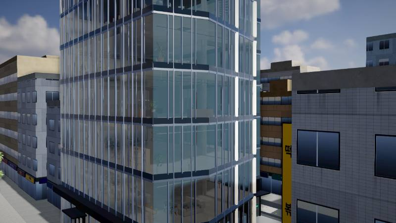
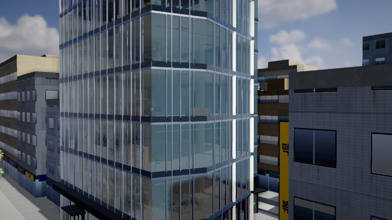
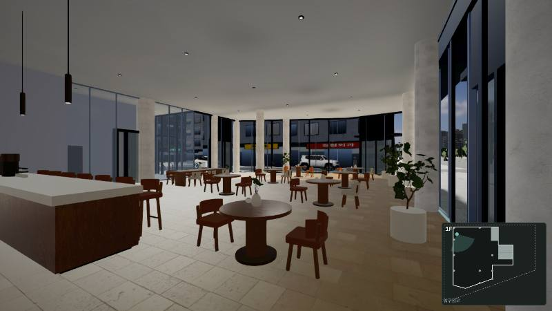
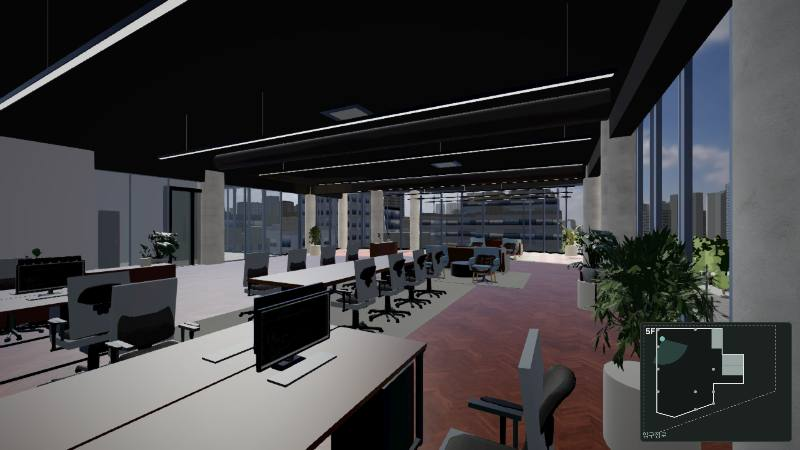
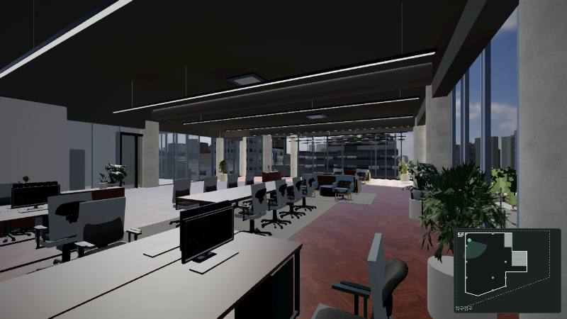
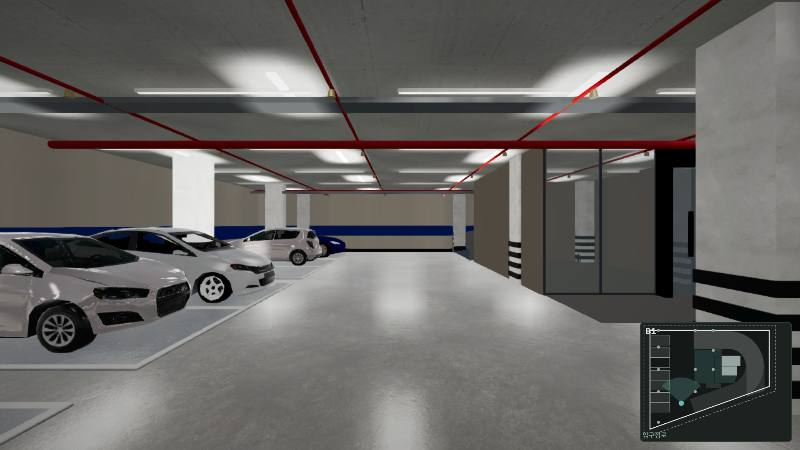
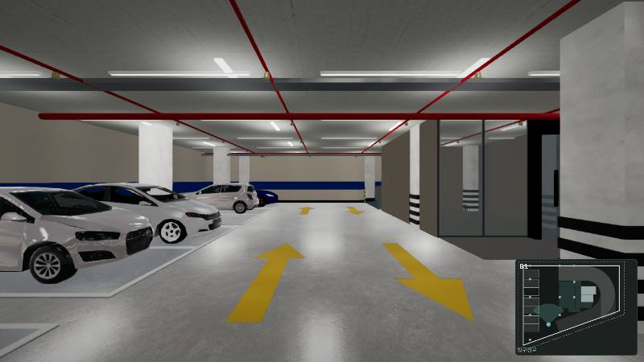
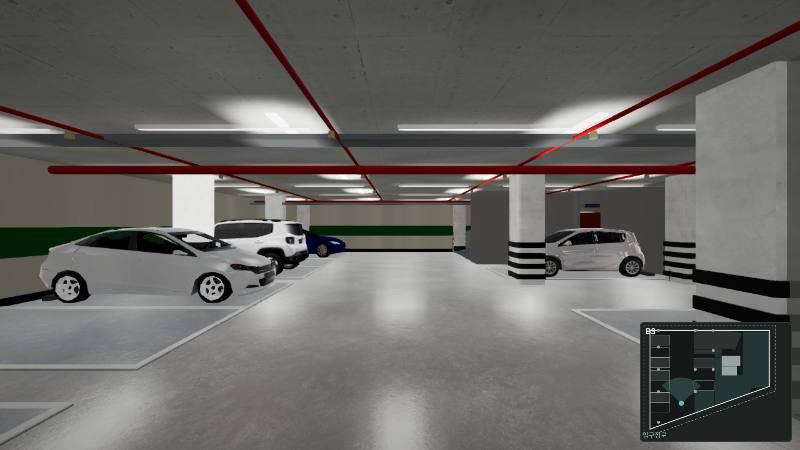
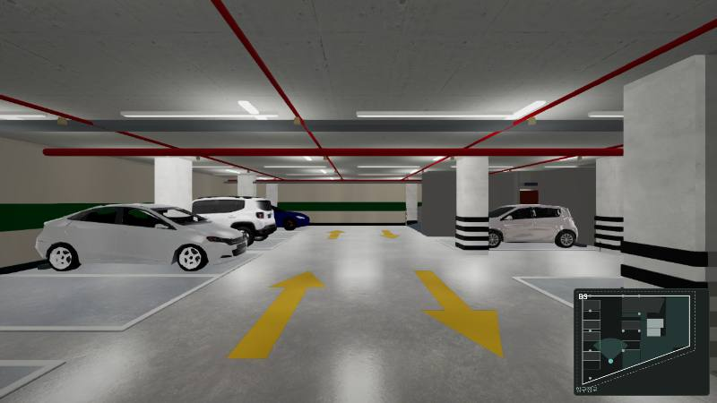
왼쪽 배치 C 석양, 오른쪽 배치 D 석양
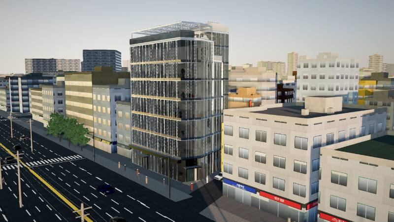
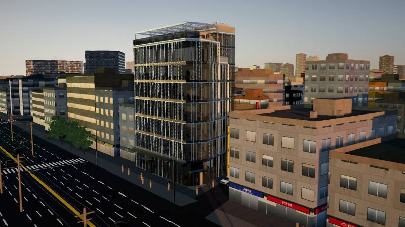
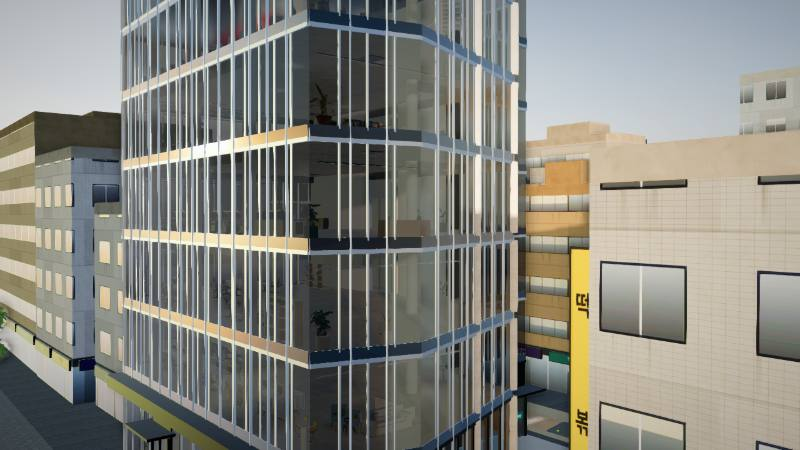
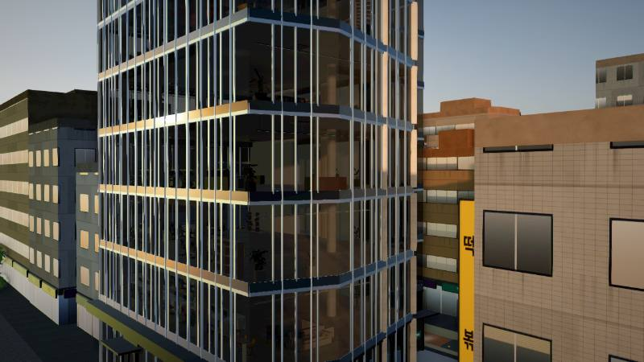
왼쪽 배치 C 야간, 오른쪽 배치 D 야간
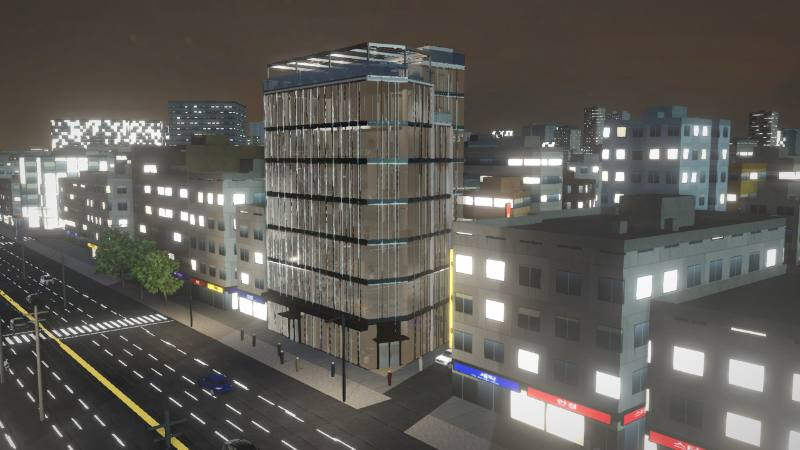
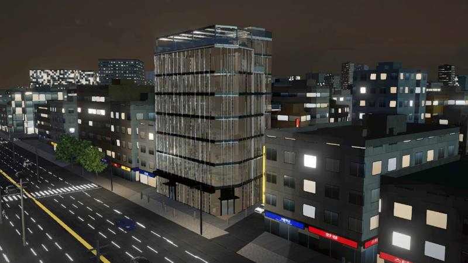
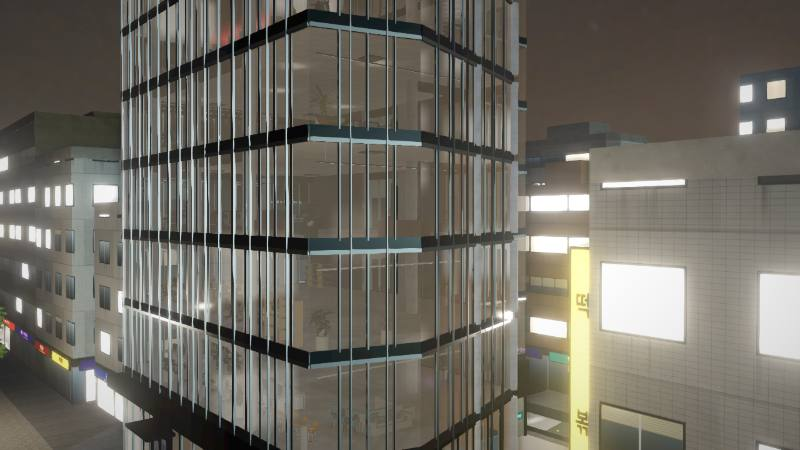
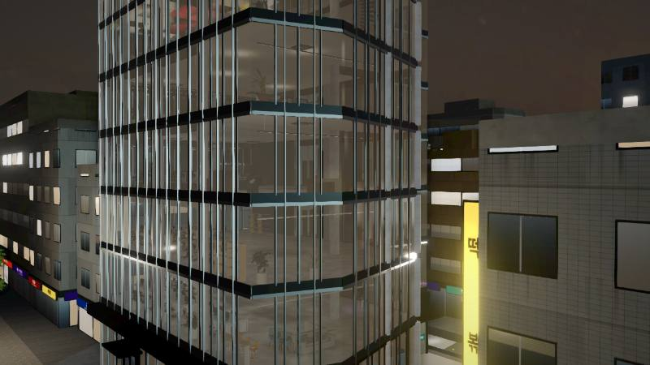
왼쪽 오후, 오른쪽 석양
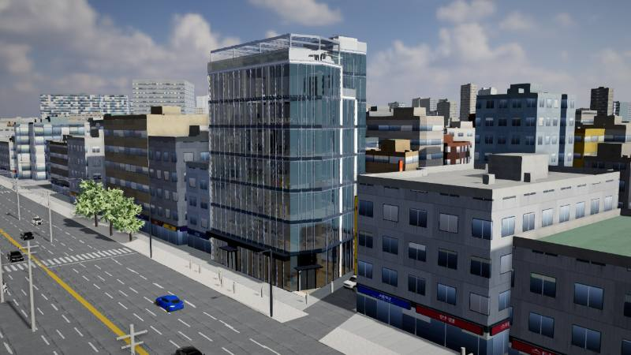
왼쪽 원본(?prktx=0), 오른쪽 KTX2
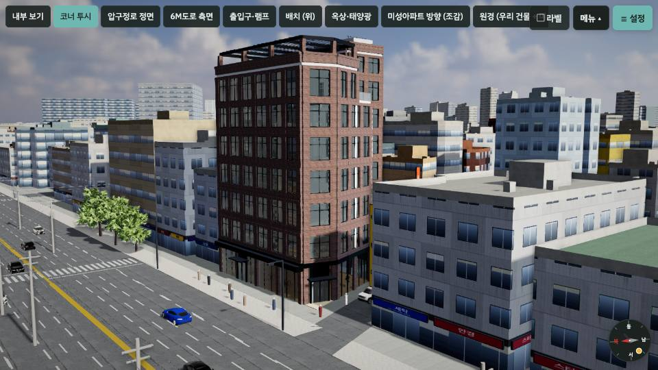
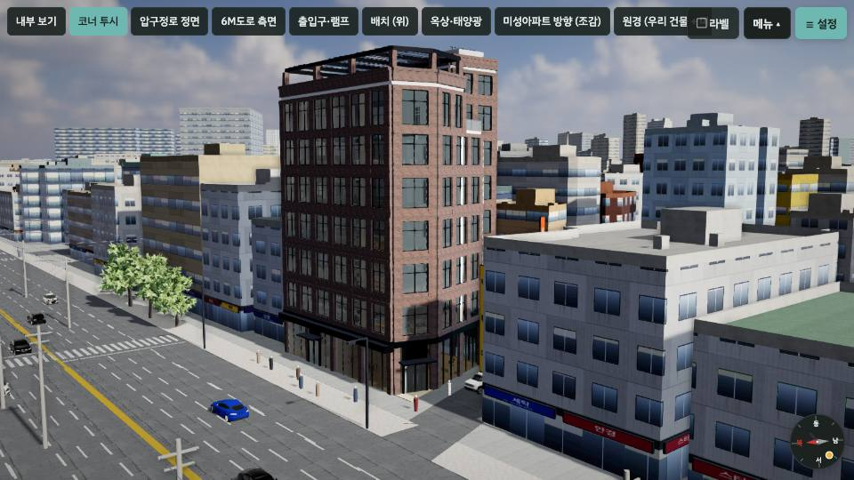
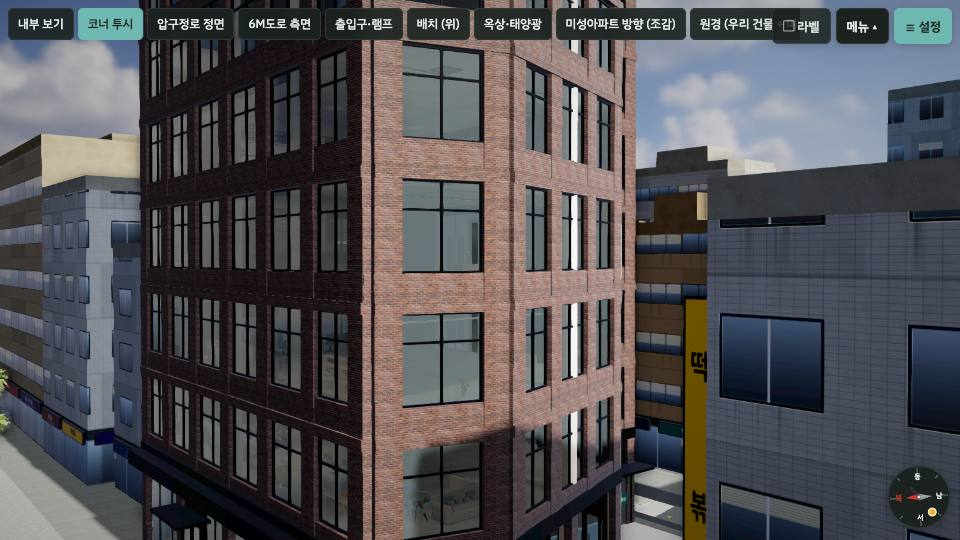
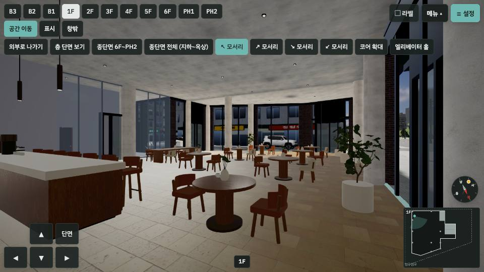
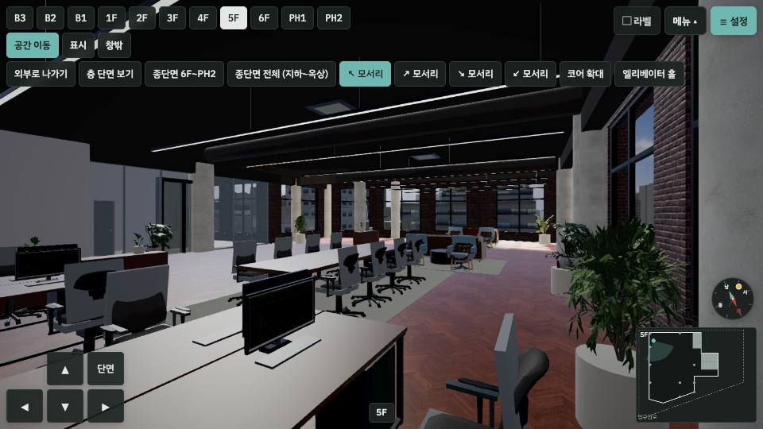
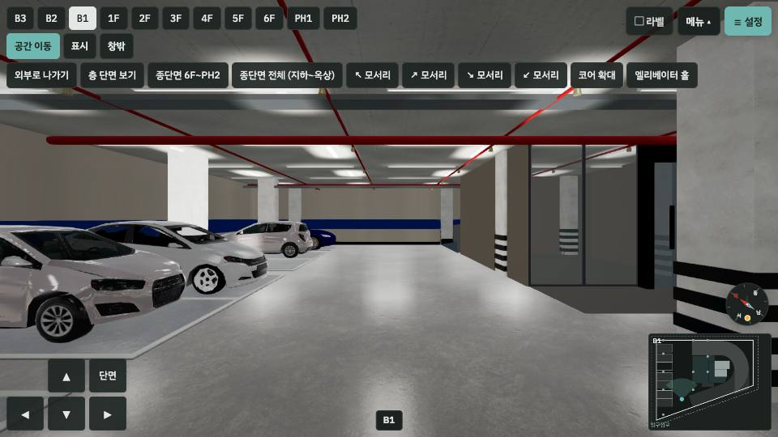